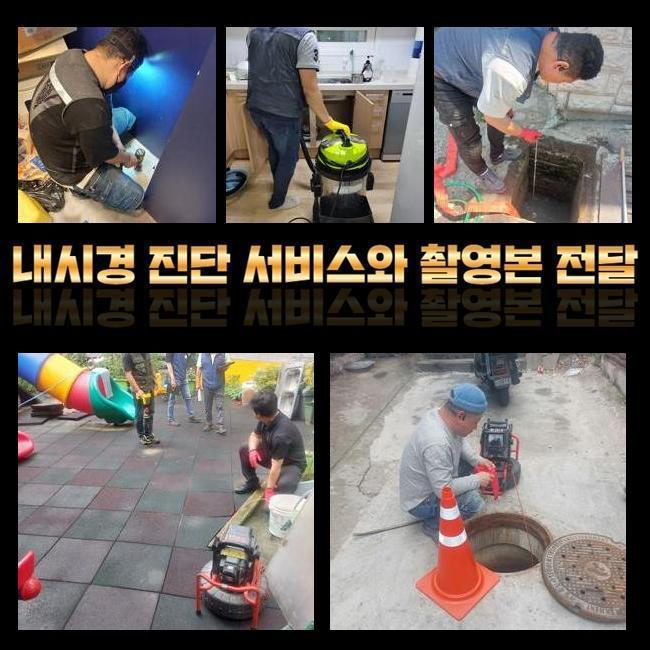
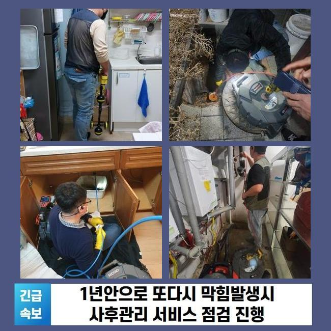
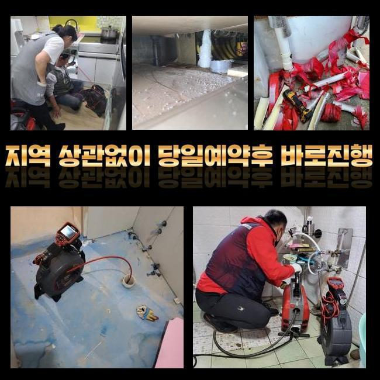
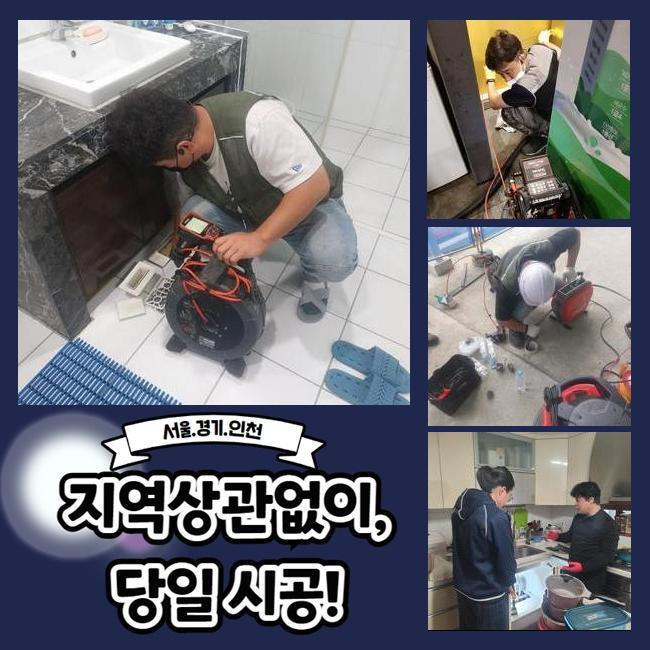
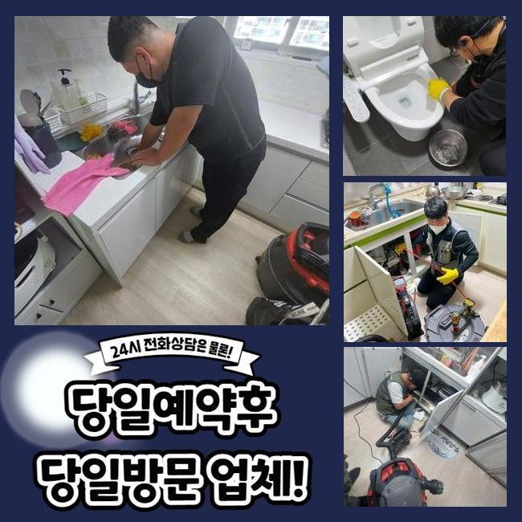
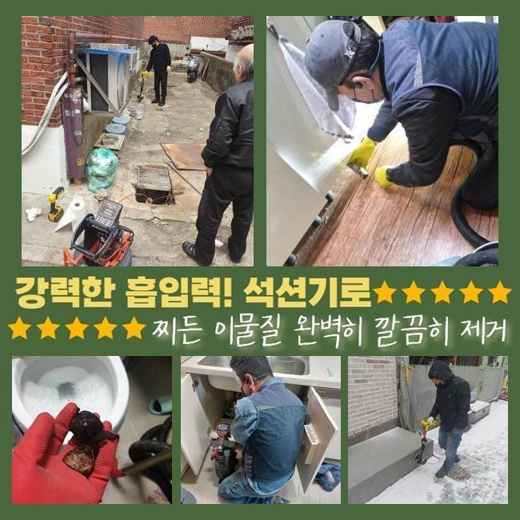
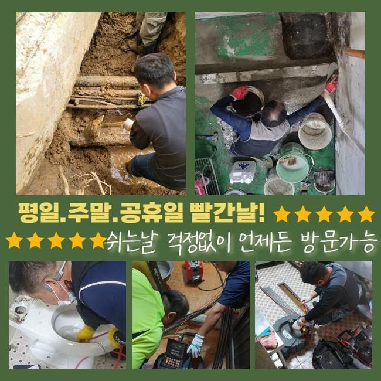

🏠 이천 진리동하수도막힘 백사면 하수구청소 설비하는곳
용인 하수구막힘 전문 시공 후기

📋 작업 개요
- 위치: 용인
- 서비스 유형: 하수구막힘, 배관막힘, 역류해결, 배관청소, 고압세척
- 작업 일시: 2024. 10. 7. 10:37
- 업체명: 하수구수사대 (010-5615-2118)
🔍 문제 상황
이천 진리동하수도막힘 백사면 하수구청소 설비하는곳
오전 일찍 저희 전문가는 고객의 수리요청을 접수받아 하수관의 불량을 점검 해보려고 현장으로 출동하셨습니다
고객님께서는 하수시스템의 물이 더디게 내려가는 듯한 느낌을 인지하고 계셨으나 큰불편을 받고 계신건 아니다라고 가볍게 넘기셔서 수리 해보거나 하진 못하셨다고 알려주셨어요
짐작 하셨던대로 얼마 지나지 않아서 하수관을 통과하는 오수가 배출되지 않아 정체되기 시작하면서 하수구 주변으로 오수가 역류하고, 내려가지 못한 오염물질에서 악취들이 올라오게 되었습니다
문제들이 커지고 있는 사태들을 알게되시고 서둘러서 저희 전문진에게 시공을 의뢰하셨습니다
배수가 진행되는 힘이 떨어지는 등 사용시에 역류현상이 일어난다는건 하수시스템의 오류를 시각화하는 중요신호입니다
이와같은 상태를 안일하게 생각하고 그냥 둘수록 심한 문제들이 발견되는 사례도 많으므로 미루지 말고 수리를 하는게 필수겠지요

🔎 원인 분석
💡 전문가 진단: 정밀 진단 장비를 사용하여 슬러지의 고착 여부를 판명하고 타격/세척 작업을 실시했습니다.
오염물이 쌓이면서 시간이 지날수록 배수관을 좁아지게 하고 이러한 진행들로 막힘현상이나 물 빠지는 것의 정체로 이어지는 문제들이 발생하게 됩니다
일상적으로 요리하면서 발생하는 과일과 채소등의 음식의 찌꺼기등과 화장실에서 이용하는 샴푸 후 떨어진 머리카락과 이물질이 배수라인에 엉켜서 하수관에 문제가 발생합니다
이런 이물질은 노후화 될수록 하수라인의 안쪽부위를 점차적으로 막게돼서 하수가 정상적으로 나오는게 어려워져요
그러한 상황들을 알게 되었는데도 신경쓰지 않은 상태로 계속 사용하시면 오염수가 역방향으로 치솟는 문제로 악화될 우려가 생기고 하수관 내벽으로 침전된 불순물이 하수와 섞여 부패되기 때문에 역한냄새가 나는 원인으로 기여하게 됩니다
배관의 문제를 대비하기 위해선 평소의 습관속에서 조금만 신경쓰시면 됩니다
매일 이용하는 요리할때는 폐오일을 배수구에서 씻어내지 말고 음식에서 나오는 찌꺼기들은 종량제봉투를 이용하여 버리도록 하는 방법들이 필수입니다
씻을때는 하수구 근처를 신경써서 청소하는 것이 좋고 비누나 불순물을 버리는 습관이 도움됩니다
이처럼 배수구의 문제들이 일어났을때 조치를 위한 작업들을 할 수 있는 시기를 놓치게 된다면 문제의 지점이 넓어지면서 고객님의 걱정이 상당하실 거예요

🔧 작업 과정
하수시스템이 고장난 현재 상태를 클린하게 파악하고자 내시경장비를 활용하여 원인이된 지점을 밝혀냅니다
전체설비에 걸친 점검작업을 미리 보는것이 시간이 오래 걸려서 간과한 상태로 계획없이 장비들을 동원하여 섣불리 작업만 실시한다면 막힘이 일어난 문제점을 찾는게 불가능하므로 며칠내로 막힘 현상들이 반복해서 발생 할 거예요
비슷한 이유로 수리업체를 찾고자 하실땐 미리 유선으로 상담하시면서 내시경기기를 이용해 문제가 된 원인들을 파악을 해본 이후에 작업을 진행하게 되는지 내용들을 세부적으로 체크하시고 진행하는게 좋은 방법이 되겠습니다
저희팀은 복합적인 문제들이 생긴 사례일지라도 오랜시간을 들여야하는 작업으로 과정이 쉽지 않더라도 마다하지 않고서 정확한 문제지점을 밝히고 나서 해결을 위한 작업과정을 진행하고 있습니다
문제가 된 부위를 찾기위해 내시경기기를 배관에 집어넣어 전체적으로 진단을 진행한 결과로는 하수가 관을 타고 내려와 모이게 되는 메인의 배수관에 침전된 노폐물들이 단단하게 변하게 되면서 일어나는 문제라는걸 확인했습니다
중요한 배수관은 설비의 중심에 있으므로 스프링장치나 플렉스샤프트 기계와 같이 노폐물을 분쇄하는 장치만 이용해 시공하려고 하면 문제가 일어난 부근까지 기기가 들어가지 못하게 돼서 작업의 한계에 직면할 수도 있는 위험이 발생합니다
이런 경우에 고압의 배수관 청소를 시행하여 전체를 통들어 청소 하는것이 필요합니다
강한 압력을 사용하는 기계는 독한 약제를 안쓰기때문에 특별한 문제가 생기지 않는 작업이고 강한 힘으로 오염원을 제거하는 과정들을 시공하게 되는만큼 하수라인 안쪽면에 쌓인 오염물질을 말끔하게 없애는 과정이 되겠습니다
오랜 경력을 갖춘 전문가들이 배수라인의 구조들과 주의점을 파악한 상황에서 하수라인마다 적당한 힘들을 사용해 세정하는 과정들을 진행하고 난후 오랫동안 막혀있던 불순물이 파쇄되어 배출되는 것을 확인할수 있었어요
세척하는 과정에서 예상했던 양보다 상당량의 불순물이 밀려나오는 현장들이 자주 있어서 큰비닐을 사용하여 작업지 근처를 막아두고 작업진행에 들어가게 되며 완벽하게 수리가 종료되고 나면 근처에 피해가 생기지 않게끔 오염원을 완전히 폐기하고 있어요
강한압의 장비를 이용할땐 생각했던 양보다 상당한 불순물이 터지듯이 밀려나와 보호작업을 다했어도 주변장소까지 지저분해질 때가 있어요
매번 작업을 완료 하고나서 청결하게 정리하며 최종작업까지 확인합니다


✅ 작업 완료
위와같은 내용들을 확인 해보시면서 배수구 관련 문제가 염려 되신다면 신속하게 전문적인 업체에 상담을 해보시는게 매우 중요한 대응책인걸 아셨겠지요?
일상에서 발견되는 하수시스템의 오류사항을 책임감 있게 해결해주는 전문적인 기술자를 찾고자 하신 경우라면 서두르셔서 의뢰를 주시기 바랍니다
다양하게 발생하는 배수관 문제를 경험해온 전문진이 빠르게 도착해서 전반적인 현재 상태를 자세히 살펴보고 의뢰인의 불편 사항을 조금이나마 불필요한 비용없이 작업이 진행될 수 있게끔 정성을 다해서 모시겠습니다




⚠️ 하수구 배관 막힘 예방 및 관리 가이드
- ✅ 머리카락, 비닐, 물티슈 등 물에 분해되지 않는 이물질은 하수구 유입을 절대 금지해 주세요.
- ✅ 하수구 거름망을 씌우고 모여진 이물질은 주기적으로 쓰레기통에 바로 비워주셔야 합니다.
- ✅ 배관 노후가 심할 경우 이물질이 더 쉽게 걸리므로 주기적인 배관 세척(고압세척 등)을 권장합니다.
- ✅ 작업 후 1년 이내 재발 시 하수구수사대에서 무상 A/S 보증 서비스를 제공합니다.
💡 핵심 정리
- 확실한 장비 작업(내시경 점검 및 샤프트 스케일링)으로 원인을 뿌리 뽑습니다.
- 작업 후 1년 이내에 동일한 부위 재발 시 100% 무상 A/S 서비스를 보장합니다.
- 서울 · 경기 · 인천 전 지역에 24시간 언제든 긴급 출동할 수 있도록 항시 대기 중입니다.
❓ 자주 묻는 질문 (FAQ)
🚨 용인 하수구막힘 문제로 고민이신가요?
정확한 원인 진단과 확실한 시공으로 재발 없는 해결을 약속드립니다.
24시간 긴급 출동 | 서울 · 경기 · 인천 전지역 | 1년 내 재발 시 무상 A/S